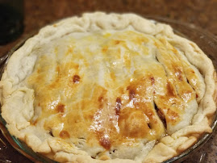

George's Chicken Pot Pie Recipe

One 12 Inch Pie
10 Min - Prep Time
40 Min - Cook Time
50 Min - Total
6 Servings
INGREDIENTS
- 1 TBSP Olive Oil
- 1.5 lbs boneless skinless chicken breasts, cubed
- Salt and Pepper to Taste
- 1/2 White Onion, Chopped
- 2 Garlic Cloves, Minced
- 1 Yukon Gold Potato, cubed
- 2 Cups Frozen Peas and Carrots
- 4 Tbsp all-purpose butter
- 4 Tbsp Butter
- 2 Cups Chicken Broth
- 1 Frozen prepared pie dough, thawed
- 1 Egg, Beaten
DIRECTIONS
- Preheat Oven:
Preheat oven to 400 degrees F (200 degrees C).
- Cook the Chicken
- Heat the Oil in a cast-iron pan
- Add the chicken, season with salt and pepper
- Cook the meat until golden brown, about 6 min
- Remove Chicken and set aside
- Prepare the Veggie Mixture
- Add onions and garlic to the skillet, saute until translucent
- Add Potato cubes, saute around 5 minutes
- Add peas and carrots, stir
- Add buttor, allow it to melt
- Sprinle flour on top. Cover Veggies, stir to avoid bumps
- Add Chicken Broth, bring to a boil to thicken
- Season with salt and peper, remove from heat
- Bake The Pie
- Add the chicken back into the mixture. Stir to distribute meat
- Place Pie Dough over the mixture, seal along the edges of skillet with fingers or fork.
- Take the beatn Egg and brush the top of the pastry
- Cut 3 Slits in the pastry, this is to release steam during cooking
- Bake for 25 to 30 Minutes, or until golden brown
USER COMMENTS
This recipe is delicious. It's perfect to warm up your insides on a cold fall night.
It will boost your mood when the days are getting shorter and darker.
- Justyna S.
This pie is so good, I could have it every day. The flaky crust is the
perfect balance to the savory filling. Highly Reccomended
- Janice S.